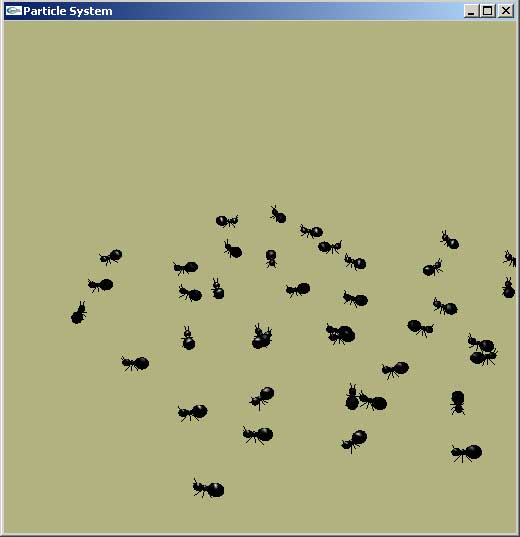
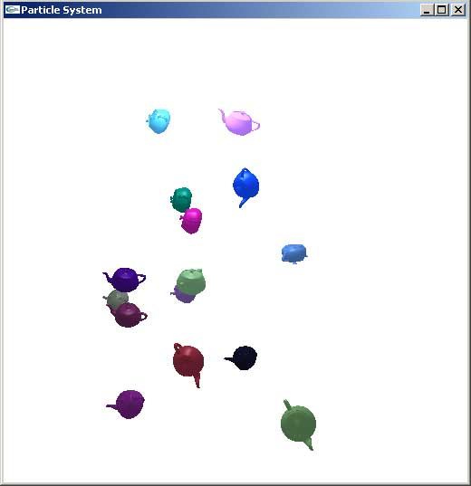
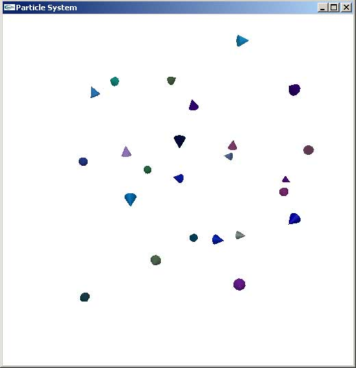
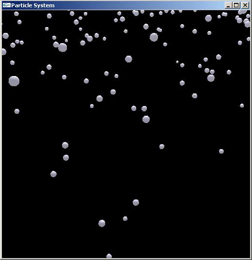
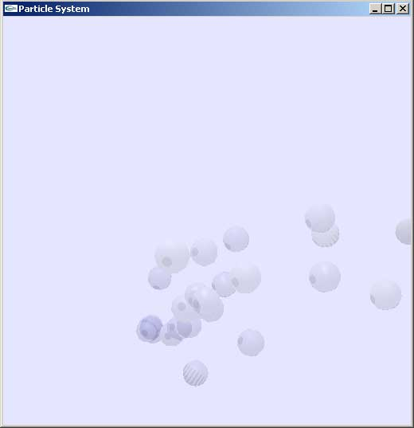
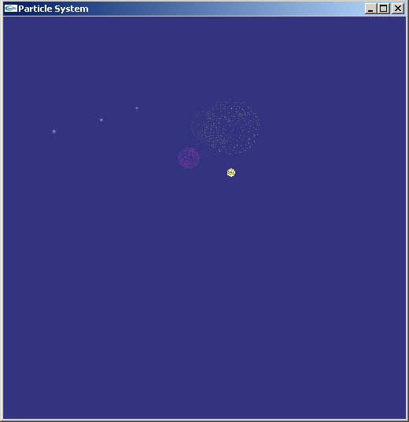
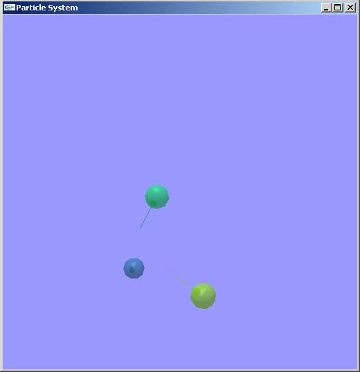
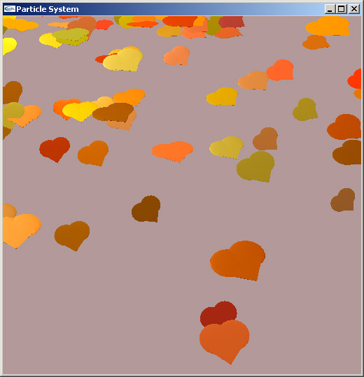

Our system allows for the easy creation of a large variety of particle simulations, we have included several examples which we hope exhibit the flexibility of the system.
Given more time, there are many things we would have implented differently or improved in the program. However we think that we got some nice results even with the limited time we had available.
At the basis of our particle system is the "ParticleSystem" class which provides implements a basic extendable particle system - two arrays of particles are held (one for the previous frame, and one for the previous frame), ability to set a lifetime for particles, and basic drawing routines for each particle.
The NewtonianParticleSystem class extends this by adding very basic newtonian physics to the simulation, we further extend this with a class that simulates fireworks.
The FlockparticleSystem class extends ParticleSystem and implements a basic version of the Boids code. Its quite surprising what nice behavior we got with such a basic implementation. The only addition we made to the basic boids code was the ability to set a global driving force to the entire flock to get the entire flock to fly in a set direction.
Additional controls can be accessed from the keyboard when the openGL view is in focus, for a complete list, press the 'h' key. Most notably '+' and '-' speed up and slow down the animation speed, and the 'c' key sets the display such that the camera follows the center of the particle system.
| ants.sim - a nice boids simulation, where the particles are limited to motion in the XZ plane. The ants are wandering about, trying not to collide with each other, and never stay to far from a leader. |  |
|
fishyTeapots.sim - flying teapots, with no global driving force, a tribute to afterdark (http://en.wikipedia.org/wiki/After_Dark). |
 |
| boids.sim - no frills boids simulation with a global driving force, using the "camera follows particles" option (press the 'c' key with the openGL window in focus) can be helpful, as the particles can fly out of view pretty quickly. |  |
|
Snow.sim - a simple simulation of snow, please be patient - it takes a little while for the snow to start falling... |
 |
| Water.sim - a sprinkler. |
|
|
bubbles.sim - some bubbles. |
 |
|
fireworks.sim - newtonian fireworks. |
 |
|
balloons.sim - Some balloons. |
 |
| autumn.sim - Falling leaves. |  |